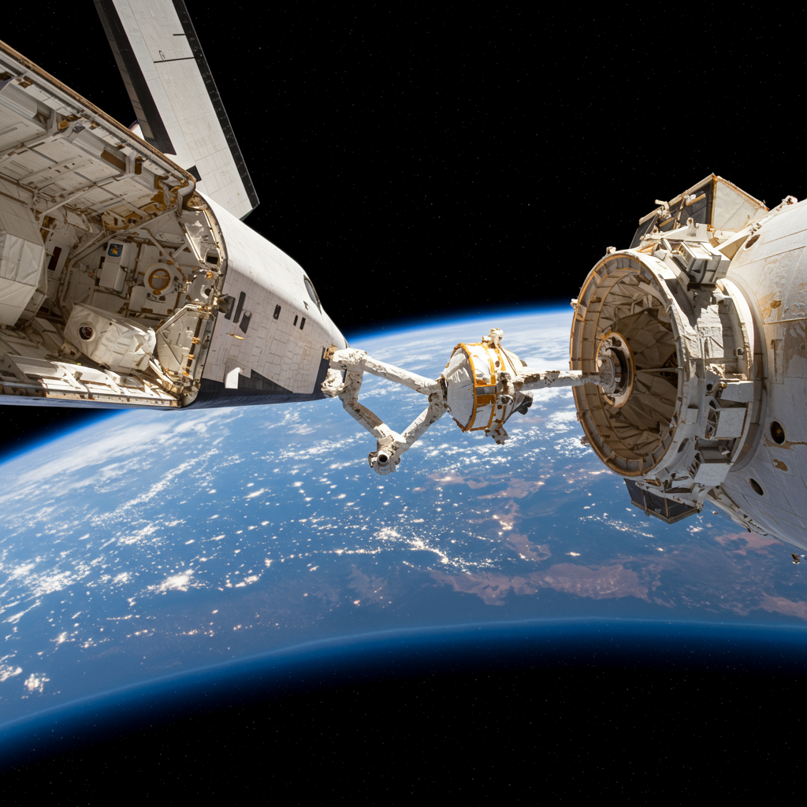

STS-51-J – Atlantis
Agencia: NASA / Departamento de Defensa de EE.UU.
Lanzamiento: 3 de octubre de 1985 – 15:15 UTC
Duración total: 4 días, 1 hora, 44 minutos
Tipo de misión: Misión clasificada del Pentágono (seguridad nacional)
Vehículo: Atlantis (OV-104)
Centro de lanzamiento: Kennedy Space Center – Plataforma 39A
Tripulación
- Karol J. Bobko – Comandante
- Ronald J. Grabe – Piloto
- David C. Hilmers – Especialista de misión
- Robert L. Stewart – Especialista de misión
- William A. Pailes – Especialista militar
Objetivos de la misión
STS-51-J fue la primera misión del Atlantis y la segunda misión del programa del Transbordador en apoyo al Departamento de Defensa. El contenido, carga útil y operación fueron clasificados. Se cree que incluyó el despliegue de satélites de comunicaciones militares (DSCS).
Datos clave
Órbitas completadas: 64
Altitud orbital promedio: 346 km
Velocidad orbital: 27,780 km/h
Reingreso y aterrizaje: 7 de octubre de 1985 en Edwards Air Force Base
Legado histórico
STS-51-J marcó el inicio de servicio del orbitador Atlantis, una nave clave en operaciones militares, científicas y misiones de largo alcance. Atlantis realizaría más adelante misiones icónicas como la entrega de módulos a la ISS y la última misión del programa STS.